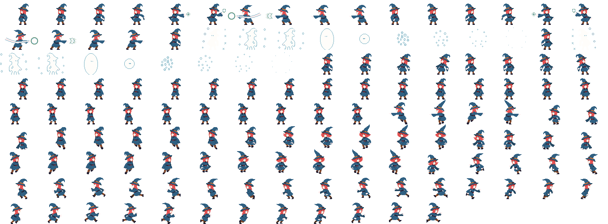

Entities aka Game Objects
Entities are what actually make a game. Anything that can be placed on a scene
will be an Entity and will have to (indirectly) implement the abstract
superclass YaegerEntity.
Static or dynamic entities
Just as with scenes, entities are available in static and dynamic version. The main difference is that a dynamic entity receives a GWU, where a static entity does not.
In general static entities will be typically used for menu-items or non-moving things. Dynamic entities are typically used for anything that should move around the scene, or should have time-based behaviour in general.
Note that the GWU originates at the scene. To make a dynamic entity to receive the GWU, it must be added to a dynamic scene. If added to a static scene, it will be as static as a static entity.
Properties for all entities
Although there a different entities, they all share a basic set of properties. These include the hue, saturation, brightness, rotation and many more. One of the more interesting properties is the viewOrder, which can be used to influence the order in which the entities are rendered on the scene. The lower the value, the closer the entity is placed to the front of the scene.
Movement of dynamic entities
Dynamic entities can move around the scene, by setting their motion. This movement is applied each GWU, which means the entity moves discretely across the scene (as opposed to continuously).
The motion consists of a direction and speed, which can be set
individually or together. The direction is a double, where the value 0
denotes downward and 180 logically means upward.
Different types of entities
There are several Entities available, which can be divided into four different types:
| Static Entity | Dynamic Entity | Type |
|---|---|---|
SpriteEntity | DynamicSpriteEntity | Sprite entity |
CircleEntity | DynamicCircleEntity | Shape entity |
EllipseEntity | DynamicEllipseEntity | Shape entity |
RectangleEntity | DynamicRectangleEntity | Shape entity |
TextEntity | DynamicTextEntity | Text entity |
CompositeEntity | DynamicCompositeEntity | Composite entity |
The sprite, shape and text-entity are basic entities. The composite entity is of a different type. It should be used whenever the entity should actually consist of several smaller entities.
Applying physics
Yaeger supports a basic form of physics for entities, through the
Newtonian interface. Since this form of physics is based on motion,
the interface makes only sense when applied to a dynamic entity.
Animating entities
Both the SpriteEntity and the DynamicSpriteEntity can be used to create
animated entities. Fot this, the provides image should be a spritesheet, as
can be seen in the image below:

For complex animation, an Animation can be created to encapsulate a part
of the spritesheet. For more information, please read the API of the interface
Animation and its implementations.